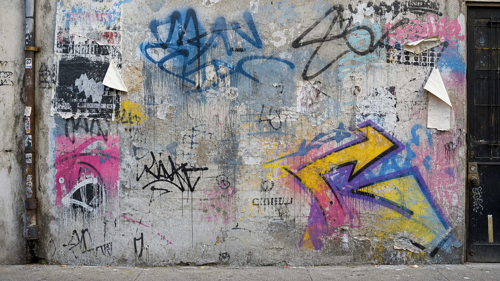

同一面涂鸦墙，不同 persona 应该看见完全不同的世界。新的测试方向是：在人眼 focal point 周围弹出一句可重复、可延展、可成为副歌核心的句子。

从街头、篮球场、练琴房和录音棚长出来的人。对城市的旧物、方言、少年感和家庭记忆特别敏感；习惯把宏大的情绪藏进很生活的物件里，让旋律先走，文字在节拍里拐弯。
中文口语 + 内韵 + R&B 切分；一点酷、一点怀旧、一点不直说。句子要能被重复，像副歌前的 hook，不要直白喊痛。
你把名字喷歪了，我却跟着唱准了
“喷歪”变成少年犯错；“唱准”变成音乐替他修正人生。
把“你喷歪 / 我唱准”做成 call-and-response 的副歌骨架。
加入墙、巷口、拍子和名字，保留酷感但让情绪往回忆走。
你把名字喷歪了，我却跟着唱准了 巷口的拍子慢半格，心跳刚好补上了 墙上那句没人懂的，我用副歌认领了 喷歪了，唱准了，原来青春没走错
卧室录音、低声、近距离麦克风和不安的身体感构成她的视角。她不会把墙看成“漂亮街头艺术”，而会看成一个太近的秘密，一层层被盖住的呼吸。
极简、低声、危险又亲密；英文短句有留白，像耳边说话。重复要像困在脑内的 whisper，不要大声宣泄。
I hide my name where the wall forgets to breathe
名字不是身份展示，而是藏匿；墙的层次变成窒息感。
重复 “don’t say it” 和 “where the wall forgets” 制造低声循环。
把涂鸦、呼吸、名字和沉默收进一个 claustrophobic hook。
I hide my name where the wall forgets to breathe Don’t say it back, don’t make it real for me Paint over paint, but it still knows underneath I hide my name where the wall forgets to breathe
舞台、家族、女性力量、南方节奏和集体呼喊是她的坐标。她看见涂鸦墙，会先看见谁被写下、谁被抹掉，以及如何把私人名字变成众人的队形。
强节拍、宣言式、可被 crowd 反复唱。句子要有身体动作和主权感，不是哀伤，而是把墙变成舞台。
They tried to cover me, I turned the wall into a choir
“cover” 是压制，“choir” 是集体声量；墙从遮盖变成合唱。
重复 “cover me / choir” 形成台上台下可回应的 hook。
加入脚步、掌声、名字，变成主题歌的主旋律口号。
They tried to cover me, I turned the wall into a choir Step on the concrete, lift my name a little higher If they paint over us, we come back louder Cover me, cover me, I turn it into fire
住在常年起雾的旧港口，替出海的人修怀表。父亲在一次台风夜没有回来，所以他把每个坏掉的齿轮都当成没能准时抵达的人。说话慢，爱用时间、锈、盐和回声。
低沉、机械、民谣式重复；像一首给失踪者的海边主题歌。不要赛博，不要华丽，句子要有潮湿的重量。
墙上的每层漆，都像晚归的人慢了一秒
“层层漆”变成年份；“慢一秒”对应钟表师的核心创伤。
用“慢一秒”做每行尾部回环，制造旧表摆动感。
把涂鸦墙延展成港口名单，每层颜色都是未归的人。
墙上的每层漆，都慢了一秒 我替晚归的人，把齿轮拧到很小 名字被新的颜色盖掉 可潮声还在，慢一秒，慢一秒
在移动沙丘边长大，守着一台能收到陌生人留言的旧电台。她没有固定故乡，靠频率认路。她看涂鸦墙会想到信号、坐标、被风抹掉又重新发出的呼叫。
明亮、跳动、带一点失真；像夜里开车听到的主题歌。句子要能反复唱出“我还在发送”的生命力。
他们把我盖掉，我就换个频率发光
“盖掉”是被遮蔽，“换频率”是她的人物能力。
副歌反复唱“换个频率发光”，旋律上扬。
加入电台、坐标、沙丘，把墙变成一块城市接收器。
他们把我盖掉，我就换个频率发光 沙丘听见城市，把坐标寄到墙上 滋啦一声，我还在中央 换个频率，换个频率发光
出生在未来城市最后一个流动戏班，戏班被商业系统收购后解散。他带着祖母留下的脸谱和变声器在地下表演。看见墙，会看见身份被覆盖、脸被重画、声音从缝里逃出来。
电子低频 + 戏曲拖腔 + 突然断裂的口语。句子要有“脸/声/码/戏”的冲突，但不要变成普通 cyberpunk 口号。
你们改我的脸，我偏把声音留在墙缝里
“改脸”是身份被重写；“墙缝里的声音”是戏班遗留。
把“改我的脸 / 留我的声”做成电子戏曲对句。
加入脸谱、变声器、后台灯，形成主题歌的反抗旋律。
你们改我的脸，我偏留下我的声 后台灯一灭，墙缝替我开嗓门 脸谱被刷成新的编号 可我一拖腔，旧戏班就回魂